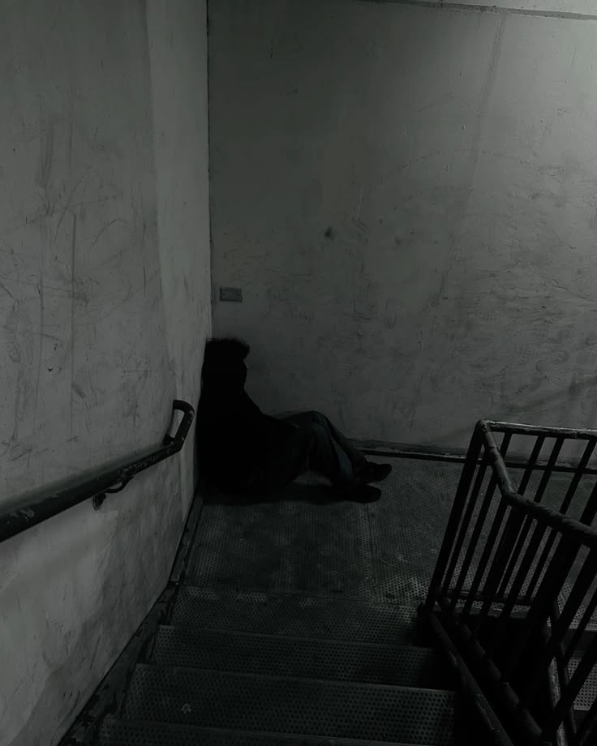

Para la persona que me creó la depresión la ha llevado a fallar muchas ocasiones, eso ha ocasionado que ella actue de maneras erroneas o que piensen que las cosas no le imteresen, eso te puede pasar a ti, la ansiedad y la procrastinación son parte del trastorno depresivo, pensar que eres insuficiente, que ya no sientas ganas por actividades que antes te emocionaban y menos por las que te obligan a hacer es normal y no te sientas culpable por ello.
Entre 700,000 y 800,000 personas se suicidan al año debido al trastorno depresivo la persona qué creó esto quiere recordarte que eres importante que no te esfuerces si no sientes que valga la pena solo tienes una vida y es realmente frustrante tener que lidiar con cosas que solo te estan destruyendo internamente. Considera este un espacio de descanso en el que puedes leer acerca de las terribles consecuencias que genera la depresión en tu cuerpo y cómo el estrés y la ansiedad te matan lentamente mientras la persona que está haciendo esto está muriendo por dentro por las mismas razones.
Si alguna vez has estado dentro de wikipedia, sabrás que puedes leer en el repositorio más grande de todos, tu decides a donde ir, que palabra quieres que sean las que te lleven a nuevos significados, tu tienes el control, decides que leer, que entender, su arquitectura es parecida a la de Wikipedia, sobria, perfecta para leer y concetrarte, recuerda este espacio es un espacio de reflexión de acerca de como el transtorno depresivo destruye a las personas, tu decides si seguir leyendo o descansar un poco, lo mereces.
Bueno, es una pregunta difícil de responder, la persona que escribió mi codigo determinó que fuese cerrado, solo conectandose a ciertos hipervinculos para que leas un poco, la depresión también esta fomentada por la falta de lectura, muchas personas lidian con la depresión de manera erronea y lo hacen debido al desconocimiento, es mejor informarse un poco y aunque no será igual a una linea ayuda, al menos podrás saber un poco más aunque no dudes en pedir ayuda, recuerda que tu vida también importa, consejo de una persona quiere está en el mismo pozo que tú.